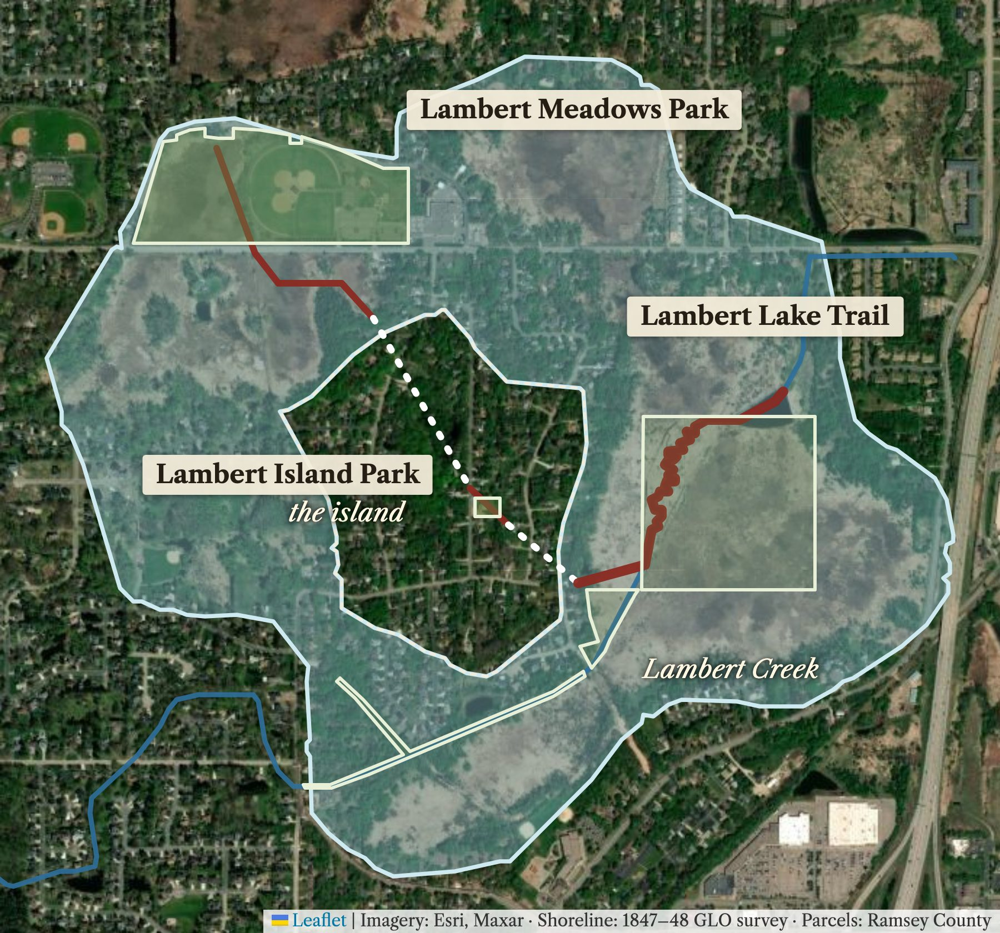
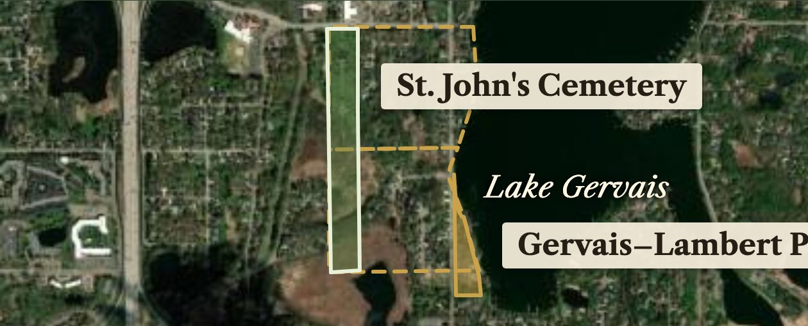

There was a lake here.
A proposal to name parks, a trail and signs in Vadnais Heights and Little Canada for Lambert Lake and the Lambert family, the first owners of this land

Lambert Lake, 1847–48 surveycity land to nameproposed trailsidewalk link
Three facts
- A 630-acre ring lake.Federal surveyors mapped it in 1847, with a 97-acre island in the middle, under today's north-central Vadnais Heights. It was drained from 1870 on; Lambert Creek is what is left.
- First owner, 1849.On 25 March 1849 the United States patented the island and a farm on Lake Gervais to Abraham Lambert, whose family came to Little Canada in 1845, the year after its first settler, Benjamin Gervais.
- A founding family's gift.He gave the land for St. John's Cemetery in Little Canada, and logs for the parish's 1851 church. He is buried there.

Three miles south in Little Canada: the cemetery and county park on his 1849 farm (dashed).
Seven asks
- Vadnais Heights: rename Elmwood Park, the only public land on the island, Lambert Island Park, timed with its new shelter.
- Vadnais Heights: rename Community Park, 35 acres on the old lakebed, Lambert Lake Park, with a panel showing the 1847 shoreline.
- Vadnais Heights, with VLAWMO: name the planned boardwalk and its links the Lambert Lake Trail, and add the route across the lakebed to the trail plan.
- White Bear Lake Area Schools: rename Vadnais Heights Elementary, which stands on the old lakebed, Lambert Lake Elementary, or name its grounds for the lake.
- Ramsey County: name the Lake Gervais playground for the Lambert farm and add a sign on both founding families; consider Gervais–Lambert Park.
- Little Canada: a council resolution supporting the county request.
- St. John the Evangelist parish: a plaque at the cemetery marking his gift of the land.